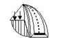

GRUNT TO GRUNT
Opinie i ekspertyzy n.t. projektowania i budowy dróg i ulic
Geotechniczne oceny podłoża gruntowego
Dokumentacje geologiczno-inzynierskie
Projektowanie dróg i ulic
Projekty i ekpsertyzy stateczności budowli ziemnych, awarii nawierzchni i konstrukcji budowalnych związanych z podłożem gruntowym
Projektowanie budowli ziemnych i wzmocnionego podłoża z wykorzystaniem geosyntetyków
2016 © PROLAB s.c. Przedsiębiorstwo Projektowo-Badawcze